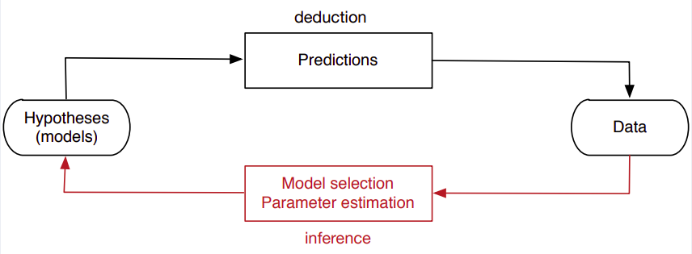

ML - Lesson 02
Indice
Fondamenti del Machine Learning
Intuitivamente, l'obiettivo principale del Machine Learning è quello di cercare di apprendere caretteristiche comuni (o patterns), sulla base di esempi (il training set),
in modo tale da ricavare un modello che ci consenta di fare predizioni.
Per predizione si intende inferire informazioni da dei dati in input, senza però che venga definito in maniera formale come estrapolare queste informazioni (altrimenti si definirebbe direttamente un agloritmo).
Un training set composto da \(n\) items, è rappresentato come un insieme di vettori \(x_1, ..., x_n \in \mathbb{K}^d\) (per qualche dominio \(\mathbb{K}\) e costante \(d > 0\)).
Insieme agli \(n\) items, il training set è provvisto di un insieme di valroti \(t_1, ..., t_n\), detti valori target, che indicano le informazioni reali che siamo interessati a predire.
Come già accennato esso viene utilizzato per derivare un modello di previsione in grado di stimare il più precisamente possibile i target reali, che ovviamente dipenderà fortemente dal training set a disposizione.

Figura 1: L'approccio può ossere applicato in maniera iterativa.
Lo scopo finale è infine quello di predire il target con le migliori prestazioni possibili, sia in termini di efficienza che di correttezza.
Supervised Learning
[descrizione informale]
Unsupervised Learning
[descrizione informale]
Reinforcement Learning
[descrizione informale]
Definizioni
Innanzitutto si parte col definire un dominio \(\mathscr{X}\) iniziale di oggetti sui quali noi vogliamo fare predizioni.
Modelliamo ognuno di questi oggetti come un vettore \(x \in \mathbb{R}^d\).
Indichiamo gli elementi del vottore col termine features.
Infine diremo che la dimensionalità del nostro problema è pari al numero di features degli elementi (ovvero \(d\)).
Dato che in genere noi vogliamo classificare gli elementi di \(\mathscr{Y}\), indichaimo con \(\mathscr{Y}\) l'insieme delle "etichette" possibili che possiamo assegnare agli elementi di \(\mathscr{X}\).
Più precisamente, quando \(\mathscr{Y}\) è continuo, allora diremo che stiamo trattando un problema di regressione, quando invece \(\mathscr{Y}\) è dicreto, allora diremo che è un problema di classificazione.
Un training set \(\mathscr{T} \subseteq \mathscr{X} \times \mathscr{Y}\) è un insieme di coppie ordinte \((x_1, t_1), ..., (x_n, t_n)\), oguna delle quali formata da un item \(x_i \in \mathscr{X}\) e dal suo relativo valore target (effettivo) \(t_i \in \mathscr{Y}\). Generalmente si indica con \(\mathbf{X} \in \mathbb{R}^{n \times d}\) la matrice degli item \(x_1, ..., x_n\), detta anche feature matrix, e con \(t \in \mathbb{R}^n\) il vettore dei relativi valori target, detto target vector.
\begin{equation*} \mathbf{X} = \left ( \begin{array}{ccc} x_{11} & x_{12} & \cdots & x_{1d}\\ x_{21} & x_{22} & \cdots & x_{2d}\\ \vdots & \vdots & \ddots & \vdots\\ x_{n1} & x_{n2} & \cdots & x_{nd} \end{array} \right ) \in \mathbb{R}^{n \times d} \end{equation*} \begin{equation*} t = \left ( \begin{array}{ccc} t_1\\ t_2\\ \vdots\\ t_n \end{array} \right ) \in \mathbb{R}^{n} \end{equation*}
Dato un training set \(\mathscr{T}\), un apprenditore automatico \(A\) è un algoritmo che ritorna una regola di predizione (classificatore o regressore in base al dominio) del tipo
\[
A(\mathscr{T}) = h : \mathscr{X} \to \mathscr{Y}
\]
Noi assumiamo che ogni oggeto del training set \(\mathscr{T}\) è campionato dal dominio \(\mathscr{X}\) in accordo a una distribuzione \(\mathscr{D}_1\).
Perciò, per ogni elemento \(x \in \mathscr{X}\) avremo che \(p_{\mathscr{D}_1}(x)\) è la porbabilità che \(x\) sia presente nell'insieme \(\mathscr{T}\).
Analogamente assumiamo che anghe i rispettivi valori target degli elementi in \(\mathscr{T}\) sono campionati in accordo a una distribuzione \(\mathscr{D}_2\), condizionata sugli elementi di \(\mathscr{X}\).
Perciò, per ogni \(t \in \mathscr{Y}\) avremo che \(p_{\mathscr{D}_2}(t \vert x)\) è la porbabilità che osservando il valore di target di \(x\) nel training set \(\mathscr{T}\), esso sia pari a \(t\).
IMPORTANTE: per il momento trascuriamo questa definizione generale probabilistica, e assumiamo che la relazione tra oggetti e valori di target sia deterministica, ovvero una funzione ben definita \(f\) tale che \(t_i = f(x_i)\).
Prediction Risk
Fissiamo un elemetno \(x \in \mathscr{X}\), con un rispettivo valore di target \(y \in \mathscr{Y}\) (nelle nostre assunzioni avremo \(y = f(x)\)).
Dato un generico predittore \(h : \mathscr{X} \to \mathscr{Y}\), l'errore rispetto \(x\) si ottiene confrontando la preizione \(h(x)\) e il reale valore target \(y\).
Il rapporto tra i due valori (predizione e target effettivo), è fatta in accordo a una regola che predefiniamo a priori e che dipende dal contesto.
Per esempio, sbagliare a riconoscere il numero 2 o il numero 8 scritti a mano sono errori poco gravi e con uguale gravità.
Viceversa, dare un falso negativo nella diagnosi di un tumore è decisamente molto più grave che dare un flaso positivo.
Tale regola di paragone è nota come Loss Function
\[
L : \mathscr{Y} \times \mathscr{Y} \to \mathbf{R}
\]
L'errore di predizione di un predittore \(h(x)\) rispetto ad \(x\) è ricavata semplicemente applicando la loss function
\[
\mathscr{R}(h(x), y) = L(h(x), y)
\]
Consideriamo ora il caso in cui il valore target \(y\) non è definito deterministicamente come \(y = f(x)\), ma ripsetta la probabilità condizionata \(p_{\mathscr{D}_2}(y \vert x)\).
Allora in questo caso l'errore di predizione è definito come la media della loss function al variare di tutti i possibili valori target \(y\) che \(x\) può assumere.
\[
\mathscr{R}(h(x)) = \mathbb{E}_{\mathscr{D}_2} [ L(h(x), y) ] = \int_{\mathscr{Y}} L(h(x), y) \cdot p_{\mathscr{D}_2}(y \vert x) \, dy
\]
oppure nel caso di \(\mathscr{Y}\) discreto
\[
\mathscr{R}(h(x)) = \mathbb{E}_{\mathscr{D}_2} [ L(h(x), y) ] = \sum_{y \in \mathscr{Y}} L(h(x), y) \cdot p_{\mathscr{D}_2}(y \vert x)
\]
Alla luce di questo, possiamo dire che predittore \(h^*\) è ottimo se minimizza la sua misura di rischio di predizione.
Nel caso di \(\mathscr{Y}\) avremo
\[
h^*(x) = arg \min_{h : \mathscr{X} \to \mathscr{Y}} \mathscr{R}(h(x), f(x)) = arg \min_{h : \mathscr{X} \to \mathscr{Y}} L(h(x), f(x))
\]
oppure nel caso probabilistico
\[
h^*(x) = arg \min_{h : \mathscr{X} \to \mathscr{Y}} \mathscr{R}(h(x), f(x)) = arg \min_{h : \mathscr{X} \to \mathscr{Y}} \mathbb{E}_{\mathscr{D}_2} [ L(h(x), f(x)) ]
\]
Avvolte si necessita di misurare l'errore di un predittore \(h\) in maniera più generale, e non in funzione dei singoli oggetti \(x\) in input.
In questo caso, basta calcolare la media di \(\mathscr{R}\) al varirare di tutte le \(x\) del dominio.
Nel caso di \(y\) deterministicamente ricavato da una funzione \(f\) avremo
\[
\mathscr{R}(h) = \mathbb{E}_{\mathscr{D}_1,f} [ L(h(x), f(x)) ] = \int_{\mathscr{X}} L(h(x), f(x)) \cdot p_{\mathscr{D}_1}(x) \, dx
\]
Invece, quando \(y\) dipende dalla distribuzione \(\mathscr{D}_2\) in maniera condizionata dalla scelta di \(x\), possiamo calcolare il rischio come la media di una v.a. multivariabile, ovvero
\[
\mathscr{R}(h) = \mathbb{E}_{\mathscr{D}_1,\mathscr{D}_2} [ L(h(x), y) ] = \int_{\mathscr{X}}\int_{\mathscr{Y}} L(h(x), y) \cdot p_{\mathscr{D}_2}(f(x) \vert x) \, dy \, dx
\]
Il problema principale di queste definizioni è che generalmente non sono noti ne la funzione \(f\) ne la distribuzione \(\mathscr{D}_2\) di \(p_{\mathscr{D}_2}(y \vert x)\).
Osservando che le uniche informazioni certe di cui siamo in possesso (relative a \(\mathscr{D}_1,\mathscr{D}_2\) o \(f\)) ce le abbiamo rispetto ai dati del training set \(\mathscr{T}\).
Perciò empiricamente possiamo impiegare una media aritmetica rispetto alle sole informazioni di \(\mathscr{T}\) per ottenere il cosidetto rischio empirico \(\mathscr{\overline{R}}(h)\).
\[
\mathscr{\overline{R}}_{\mathscr{T}}(h) = \frac{1}{\vert \mathscr{T} \vert } \sum_{(x_i,t_i) \in \mathscr{T}} L(h(x), t)
\]
Concludiamo dicendo che l'approccio del machine learning consiste nel derivare un predittore \(h\) che (quantomeno in maniera approssimata) minimzza il rischio empirico calcolato rispetto alle informazioni contenute nel training set \(\mathscr{T}\).
Perciò il problema dell'apprendimento automatico si riduce un problema di minimizzazione in un certo spazio delle funzioni \(\mathscr{H}\), ovvero l'insieme di tutti i possibili predittori \(h\). \[ h^* = arg \min_{h \in \mathscr{H}} \mathscr{\overline{R}}_{\mathscr{T}}(h) \] L'insieme di funzioni \(\mathscr{H}\) nel quale effettuiamo la ricerca è anche detto hypothesis set (insieme di ipotesi) o inductive bias.